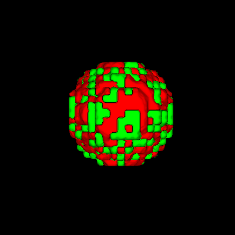
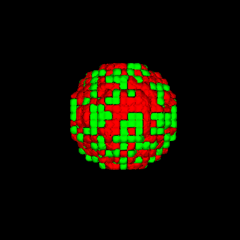

The following 2 scripts demonstrate how we can render cells from a .vtk lattice file dumped by cc3D. The first script includes a callback method for dumping camera parameters (via 'c' keypress) which can then be inserted into the camera's "Set" methods if one wants a preset view on subsequent calls.
# renCellTypes.py
# Sample usage: python renCellTypes.py Step_01880 cells.dat 200 -1
import vtk
from vtk.util.numpy_support import numpy_to_vtk, vtk_to_numpy
import sys
import string
argc = len(sys.argv)
#print 'argc=',argc
if argc < 5:
print 'Usage: ',sys.argv[0],' <root-filename[without .vtk]> <celltype-filename> smoothIters maxCells '
raise ValueError, 'Too few input args'
def Keypress(obj,event):
global camera
key = obj.GetKeySym()
if key == 'c':
print '------- camera params -------'
print ' camera.SetPosition',camera.GetPosition()
print ' camera.SetFocalPoint',camera.GetFocalPoint()
print ' camera.SetViewUp=',camera.GetViewUp()
print ' camera.SetDistance(',camera.GetDistance(),')'
print ' camera.SetClippingRange',camera.GetClippingRange()
idx=1
root_fname = sys.argv[idx]
print 'root_fname=',root_fname
idx=idx+1
celltype_fname = sys.argv[idx]
idx=idx+1
smoothIters = string.atoi(sys.argv[idx])
idx=idx+1
maxCells = string.atoi(sys.argv[idx])
idx=idx+1
print 'maxCells=',maxCells
cellTypeDict = {}
cellTypeColorDict = {}
fp = open(celltype_fname, 'r')
print '--------- cell params -------'
for line in fp:
items=line.split()
print items
cellTypeDict[int(items[0])] = []
cellTypeColorDict[int(items[0])] = [float(items[1]),float(items[2]),float(items[3])]
print 'cellTypeDict=',cellTypeDict
print 'cellTypeColorDict=',cellTypeColorDict
# making VOI larger than actual lattice is fine
maxX = 500
maxY = 500
maxZ = 500
ren1 = vtk.vtkRenderer()
ren1.SetBackground(1,1,1) # white
ren1.SetBackground(0,0,0) # black
renWin = vtk.vtkRenderWindow()
renWin.AddRenderer(ren1)
iren = vtk.vtkRenderWindowInteractor()
iren.SetRenderWindow(renWin)
reader = vtk.vtkDataSetReader()
reader.SetFileName(root_fname + '.vtk')
#--------------------
aax0 = vtk.vtkAssignAttribute()
aax0.SetInputConnection(reader.GetOutputPort())
aax0.Assign("CellType","SCALARS","POINT_DATA")
updateFlag = True
if updateFlag:
aax0.Update()
typeRange = aax0.GetOutput().GetScalarRange()
print 'CellType range: ',typeRange # CellId: (748.0, 725445.0); CellType: (1.0, 2.0)
#-------------------
srate = 1
ct_voi = vtk.vtkExtractVOI()
ct_voi.SetInputConnection(aax0.GetOutputPort())
ct_voi.SetVOI(0,maxX,0,maxY,0,maxZ)
ct_voi.SetSampleRate(srate,srate,srate)
if updateFlag:
ct_voi.Update()
pd = ct_voi.GetOutput().GetPointData()
ct = pd.GetScalars() # (vtkCharArray)0x10d358730
#print type(ct)
ct_array_all = vtk_to_numpy(ct) # --> numpy.ndarray
cont_type = []
smoother = []
normals = []
mapper = []
actor = []
# ------- loop over all requested cell types:
for cellTypeCount in range(len(cellTypeDict)):
cellType = cellTypeDict.keys()[cellTypeCount]
print 'cellType, len(ct_array_all)=', cellType,len(ct_array_all)
print 'cellType=',cellType
cont_type.append(vtk.vtkDiscreteMarchingCubes())
cont_type[cellTypeCount].SetInputConnection(aax0.GetOutputPort())
cont_type[cellTypeCount].SetValue(0,cellType)
# print unique_cell_ids_type2[idx]
#print '----------'
smoother.append(vtk.vtkSmoothPolyDataFilter())
smoother[cellTypeCount].SetInputConnection(cont_type[cellTypeCount].GetOutputPort())
smoother[cellTypeCount].SetNumberOfIterations(smoothIters)
smoother[cellTypeCount].FeatureEdgeSmoothingOff() # default 'off'
normals.append( vtk.vtkPolyDataNormals())
normals[cellTypeCount].SetInputConnection(smoother[cellTypeCount].GetOutputPort())
mapper.append( vtk.vtkDataSetMapper())
mapper[cellTypeCount].SetInputConnection(normals[cellTypeCount].GetOutputPort())
mapper[cellTypeCount].ScalarVisibilityOff()
actor.append(vtk.vtkActor())
actor[cellTypeCount].SetMapper(mapper[cellTypeCount])
actor[cellTypeCount].GetProperty().SetColor(cellTypeColorDict[cellType]) # red, green, blue
ren1.AddActor(actor[cellTypeCount])
#----------------------
outline = vtk.vtkOutlineFilter()
outline.SetInputConnection(reader.GetOutputPort())
mapOutline = vtk.vtkPolyDataMapper()
mapOutline.SetInputConnection(outline.GetOutputPort())
outlineActor = vtk.vtkActor()
outlineActor.SetMapper(mapOutline)
outlineActor.GetProperty().SetColor(0, 0, 0)
ren1.AddActor(outlineActor)
#------------------
renWin.SetSize(400,400)
ren1.ResetCamera()
#cam.Elevation(40.0)
#cam.Azimuth(degRot) # Elevation would spin about X
#cam.SetRoll(-55.61345070045176)
#cam.SetDirectionOfProjection(-0.32895916388395147, 0.45637174018064514, -0.826747061235334)
camera = ren1.GetActiveCamera()
# To use, one would substitute values to these 'Set' methods with those dumped via the 'Keypress' callback ('c' press)
presetCamera = True
if presetCamera:
camera.SetPosition (-44.247221307251955, 64.40839199911628, 167.57254230515747)
camera.SetFocalPoint (19.567391616515522, 50.33463694646327, 35.00283926385244)
camera.SetViewUp= (0.05328069321608024, 0.9953681040633562, -0.08002190414963661)
camera.SetDistance(147.80088487)
camera.SetClippingRange (6.058680013013827, 326.58162226401134)
# camera.SetViewAngle(30)
# camera.SetViewUp(0.0,1.0,0.0 )
# camera.OrthogonalizeViewUp()
renWin.Render()
# ----- capture rendered window as .png
w2i = vtk.vtkWindowToImageFilter()
w2i.SetInput(renWin)
iw = vtk.vtkPNGWriter()
iw.SetInput(w2i.GetOutput())
iw.SetFileName(root_fname+".png")
#print root_fname,', # unique cells=',len(unique_cell_ids)
iw.Write()
iren.AddObserver("KeyPressEvent", Keypress)
iren.Start()
Sample input file of cell params (celltype R G B):
~/Documents/Glazier/StJude/Sep2012/LatticeData$ ty cells.dat 1 1 0 0 2 0 1 0
Sample run:
~/Documents/Glazier/StJude/Sep2012/LatticeData$ python renCellTypes.py Step_00010 cells.dat 100 -1
root_fname= Step_00010
maxCells= -1
--------- cell params -------
['1', '1', '0', '0']
['2', '0', '1', '0']
cellTypeDict= {1: [], 2: []}
cellTypeColorDict= {1: [1.0, 0.0, 0.0], 2: [0.0, 1.0, 0.0]}
CellType range: (0.0, 2.0)
cellType, len(ct_array_all)= 1 1000000
cellType= 1
cellType, len(ct_array_all)= 2 1000000
cellType= 2

Using a sample .vtk lattice file dumped by cc3D for the cellsort_3D Demo.
To render individual cells:
# renCells.py
# Sample usage: python renCells.py Step_01880 cells.dat 200 -1
import vtk
from vtk.util.numpy_support import numpy_to_vtk, vtk_to_numpy
import sys
import string
argc = len(sys.argv)
#print 'argc=',argc
if argc < 5:
print 'Usage: ',sys.argv[0],' <root-filename[without .vtk]> <celltype-filename> smoothIters maxCells '
raise ValueError, 'Too few input args'
idx=1
root_fname = sys.argv[idx]
print 'root_fname=',root_fname
idx=idx+1
celltype_fname = sys.argv[idx]
idx=idx+1
smoothIters = string.atoi(sys.argv[idx])
idx=idx+1
maxCells = string.atoi(sys.argv[idx])
idx=idx+1
print 'maxCells=',maxCells
cellTypeDict = {}
cellTypeColorDict = {}
fp = open(celltype_fname, 'r')
print '--------- cell params -------'
for line in fp:
items=line.split()
print items
cellTypeDict[int(items[0])] = []
cellTypeColorDict[int(items[0])] = [float(items[1]),float(items[2]),float(items[3])]
print 'cellTypeDict=',cellTypeDict
print 'cellTypeColorDict=',cellTypeColorDict
# making VOI larger than actual lattice is fine
maxX = 500
maxY = 500
maxZ = 500
ren1 = vtk.vtkRenderer()
ren1.SetBackground(0,0,0)
renWin = vtk.vtkRenderWindow()
renWin.AddRenderer(ren1)
iren = vtk.vtkRenderWindowInteractor()
iren.SetRenderWindow(renWin)
reader = vtk.vtkDataSetReader()
reader.SetFileName(root_fname + '.vtk')
#--------------------
aax0 = vtk.vtkAssignAttribute()
aax0.SetInputConnection(reader.GetOutputPort())
aax0.Assign("CellType","SCALARS","POINT_DATA")
updateFlag = True
if updateFlag:
aax0.Update()
typeRange = aax0.GetOutput().GetScalarRange()
print 'CellType range: ',typeRange # CellId: (748.0, 725445.0); CellType: (1.0, 2.0)
#-------------------
srate = 1
ct_voi = vtk.vtkExtractVOI()
ct_voi.SetInputConnection(aax0.GetOutputPort())
ct_voi.SetVOI(0,maxX,0,maxY,0,maxZ)
slice_num = 170
#ct_voi.SetVOI(0,maxX,0,maxY,slice_num,slice_num)
#ct_voi.SetSampleRate(srate,srate,1)
if updateFlag:
ct_voi.Update()
pd = ct_voi.GetOutput().GetPointData()
ct = pd.GetScalars() # (vtkCharArray)0x10d358730
#print type(ct)
ct_array_all = vtk_to_numpy(ct) # --> numpy.ndarray
#-------
aax = vtk.vtkAssignAttribute()
aax.SetInputConnection(reader.GetOutputPort())
aax.Assign("CellId","SCALARS","POINT_DATA")
if updateFlag:
aax.Update()
idRange = aax.GetOutput().GetScalarRange()
print 'CellId range (all): ',idRange # CellId: (748.0, 725445.0); CellType: (1.0, 2.0)
cid_voi = vtk.vtkExtractVOI()
cid_voi.SetInputConnection(aax.GetOutputPort())
cid_voi.SetVOI(0,maxX,0,maxY,0,maxZ)
cid_voi.SetSampleRate(srate,srate,srate)
if updateFlag:
cid_voi.Update()
pd = cid_voi.GetOutput().GetPointData()
cid = pd.GetScalars() # (vtkCharArray)0x10d358730
cid_array_all = vtk_to_numpy(cid) # --> numpy.ndarray
print 'len(cid_array_all)=',len(cid_array_all)
cont_type = []
smoother = []
normals = []
mapper = []
actor = []
# ------- loop over all requested cell types:
for cellTypeCount in range(len(cellTypeDict)):
cellType = cellTypeDict.keys()[cellTypeCount]
print 'cellType, len(ct_array_all)=', cellType,len(ct_array_all)
for idx in range(len(ct_array_all)):
cid = cid_array_all[idx]
if ct_array_all[idx] == cellType:
if (cid not in cellTypeDict[cellType]):
cellTypeDict[cellType].append(cid) # append new unique cell id
print cellType,') # unique cellids = ',len(cellTypeDict[cellType])
#------------------------------------
cont_type.append(vtk.vtkDiscreteMarchingCubes())
cont_type[cellTypeCount].SetInputConnection(aax.GetOutputPort())
maxCells2 = maxCells
if maxCells < 0:
maxCells2 = len(cellTypeDict[cellType])
#print '--------- type1 isovals:'
for idx in range(maxCells2):
cont_type[cellTypeCount].SetValue(idx,cellTypeDict[cellType][idx])
# print unique_cell_ids_type2[idx]
#print '----------'
smoother.append(vtk.vtkSmoothPolyDataFilter())
smoother[cellTypeCount].SetInputConnection(cont_type[cellTypeCount].GetOutputPort())
smoother[cellTypeCount].SetNumberOfIterations(smoothIters)
# print 'GetEdgeAngle=',smoother[cellTypeCount].GetEdgeAngle()
# print 'GetFeatureAngle=',smoother[cellTypeCount].GetFeatureAngle()
# print 'GetBoundarySmoothing=',smoother[cellTypeCount].GetBoundarySmoothing() # default 'on'
# smoother.BoundarySmoothingOff() # don't see any difference
# print 'GetFeatureEdgeSmoothing=',smoother[cellTypeCount].GetFeatureEdgeSmoothing()
# smoother.FeatureEdgeSmoothingOn() # weird - generates less smooth surface!
smoother[cellTypeCount].FeatureEdgeSmoothingOff() # default 'off'
normals.append( vtk.vtkPolyDataNormals())
normals[cellTypeCount].SetInputConnection(smoother[cellTypeCount].GetOutputPort())
mapper.append( vtk.vtkDataSetMapper())
mapper[cellTypeCount].SetInputConnection(normals[cellTypeCount].GetOutputPort())
mapper[cellTypeCount].ScalarVisibilityOff()
actor.append(vtk.vtkActor())
actor[cellTypeCount].SetMapper(mapper[cellTypeCount])
actor[cellTypeCount].GetProperty().SetColor(cellTypeColorDict[cellType]) # red, green, blue
ren1.AddActor(actor[cellTypeCount])
#----------------------
outline = vtk.vtkOutlineFilter()
outline.SetInputConnection(reader.GetOutputPort())
mapOutline = vtk.vtkPolyDataMapper()
mapOutline.SetInputConnection(outline.GetOutputPort())
outlineActor = vtk.vtkActor()
outlineActor.SetMapper(mapOutline)
outlineActor.GetProperty().SetColor(0, 0, 0)
ren1.AddActor(outlineActor)
#------------------
renWin.SetSize(400,400)
cam = ren1.GetActiveCamera()
ren1.ResetCamera()
#cam.Elevation(40.0)
#cam.Azimuth(degRot) # Elevation would spin about X
#cam.SetRoll(-55.61345070045176)
#cam.SetDirectionOfProjection(-0.32895916388395147, 0.45637174018064514, -0.826747061235334)
presetCamera = False
if presetCamera:
cam = ren1.GetActiveCamera()
cam.SetPosition(0.0,0.0,1.0)
cam.SetFocalPoint(0.0,0.0,0.0)
cam.SetDistance(1.0)
cam.SetViewAngle(30)
cam.SetViewUp(0.0,1.0,0.0 )
cam.OrthogonalizeViewUp()
renWin.Render()
w2i = vtk.vtkWindowToImageFilter()
w2i.SetInput(renWin)
iw = vtk.vtkPNGWriter()
iw.SetInput(w2i.GetOutput())
iw.SetFileName(root_fname+".png")
#print root_fname,', # unique cells=',len(unique_cell_ids)
iw.Write()
iren.Start()
~/Documents/Glazier/StJude/Sep2012/LatticeData$ !py
python renCells.py Step_00010 cells.dat 100 -1
root_fname= Step_00010
maxCells= -1
--------- cell params -------
['1', '1', '0', '0']
['2', '0', '1', '0']
cellTypeDict= {1: [], 2: []}
cellTypeColorDict= {1: [1.0, 0.0, 0.0], 2: [0.0, 1.0, 0.0]}
CellType range: (0.0, 2.0)
CellId range (all): (0.0, 2103.0)
len(cid_array_all)= 1000000
cellType, len(ct_array_all)= 1 1000000
1 ) # unique cellids = 1089
cellType, len(ct_array_all)= 2 1000000
2 ) # unique cellids = 1014
